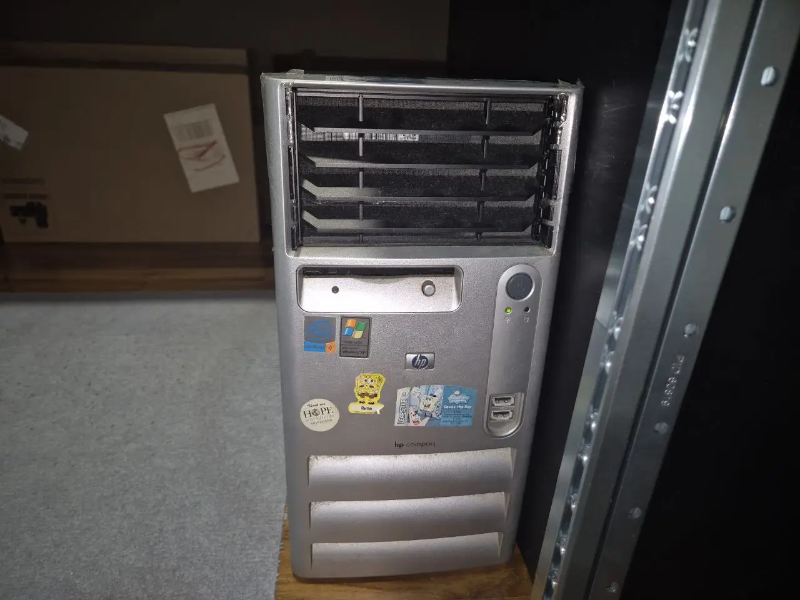

Cold Backup Server (Depreciated)
Used for long-term offline storage and secondary Duplicati backup target.
Used to call it cold storage (since its unplugged when not in use - but also play on the supermarket chain Cold Storage)
The chassis used to be my family's PC from the early 2000s - hence the Spongebob stickers
Depreciated in favour of an active Debian Server

Hardware
- CPU: AMD Ryzen 3 3200G
- RAM: 8 GB DDR4
- Storage: 256 GB SSD + 4×4TB HDDs (RAID 10)
Services
- Windows OS with manual Duplicati sync
- Cold media archive target